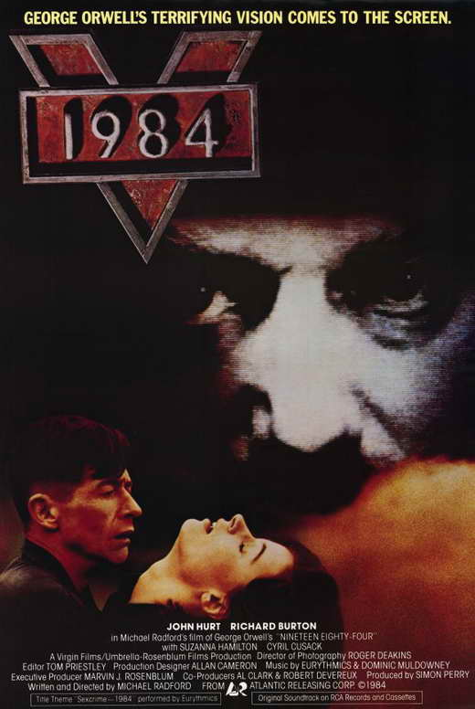
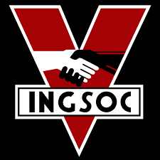
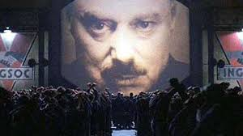
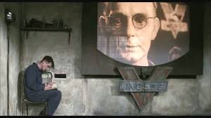
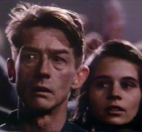
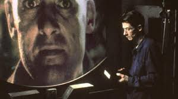

Resumen de la Pelicula 1984
Esto ocurre en la region de Oceania donde esta siendo controlado por el Gran Hermano. Al comenzar la pelicula estaba lo que se llama el Grito de Odio donde reunian a los prisioneros a que se quejaran del partido y lo que hacian mal al pueblo pero ellos lo hacian a su manera. Unos de los prisioneros llamado Winston trabaja para el Ministro de la Verdad. Era donde revisaban las noticias y las intercambiaban por con una mentira. Winston tiene un diario en donde escribia secretamente para que no lo descubrieran porque lo vigilaban que podria pasar en el futuro si siguiera asi. Winston conoce a una mujer llamada Julia y tiene relacion con ella en un bosque porque no lo permitian. Winston tiene una alianza con O'Brien pero O'Brien solamente lo hace para traicionarlo porque el esta con el partido. Al igual le da un libro del lenguaje nuevo de la region para cuando vaya trabajar en el Ministro de la Verdad. O'Brien le renta un cuarto Winston y Julia para tener relaciones. Un dia lo cogieron a los dos y se llevaron a Winston para torturarlo por los crimenes que nunca hizo. Lo torturaban con su peor fobia que son las ratas pero el queria que torturaban Julia. Entonces al fin ya lo iba reformando para que perdiera su memoria.


Significado de INGSOC
Como pueden ver INGSOC es el acronimo de "English Socialism" donde el Partido Socialista empieza a gobernar. Tambien se hace cargo a las clases como la clase alta, medio y baja. La clase alta esta compuesta por los gobernantes en las cuales tienen sus privilegios y poder. Luego esta clase media llamada el Partido Exterior que ellos estan a las mas duras restricciones y vigilados de cerca. Los gobernantes piensan que esta fue la clase que se rebelo ante el gobierno tiranico en el pasado. Por ultimo esta la clase baja que se compende por la mayoria de la poblacion y en termino relativo la mas despreocupada. Ellos no estan vigilados constantemente y se mantiene latentes a traves de bebidas alcoholicas y sexo libre.
Referencia: Significado de INGSOC
La Manera de Conseguir Libertad
La libertad es una palabra importante porque se trata del ser humano teniendo su propia
voluntad. En la pelicula 1984 se apreciaba este termino pues por lo visto en la pelicula.
Se ve como en Oceania el Gran Hermano controlaba a los prisioneros. Como por lo visto al
principio de la pelicula hacian el Grito de Odio a expresarse del partido de lo que hacian
mal en la region. Por lo tanto aqui hablaremos como tratan de conseguir libertad.

Unas de las maneras de conseguir libertad es por expresarte y dar tu opinion. En la pelicula
Winston uno de los prisioneros trataba de expresarse pero no lo permiten en la region. Como el trabajaba
para el Ministro de la Verdad vimos que a veces queria dejar las noticias como estaban pero no podia porque
lo podrian coger. Winston tenia un diario en donde escribia lo que podria pasar en el futuro. Cuando uno se expresa
siente que esta libre porque saben que tienen fe en poder salir en situaciones como estas.

Ahora bien encontramos algo bien importante que es la libertad en las relaciones de amor. En la
pelicula se ve como Winston conoce a Julia y se enamoran. Ademas de que se enamoran rentan un cuarto.
Ellos al conocerse querian que todo esto del partido se acabara. Cuando estaban torturando Winston pidio que torturen a
Julia y vi libertad porque si muere no sufriria mas y entendemos que cualquier persona haria lo mismo para liberarla.
Uno lucha por los demas y aunque pague las consequencia haces todo lo posible para que puedan vivir en paz.

Una de las cosas que me intereso en la pelicula fue acerca de la privacidad. Me dio curiosidad porque aunque
son prisioneros la tecnologia de esa epoca fue lo mas que llamo la antencion cuando vigilaban. Porque comparando con
el tiempo de ellos con el de nosotros lo veo casi igual. Basicamente en nuestra epoca aunque la tecnologia haya
mejorado seguimos vigilados. Porque con un celular o tablet no sabemos quienes nos rastrean pero para poder
liberarnos seria algo dificil ya que todo el mundo no sueltan los dispositivos.

Durante en la pelicula vimos algo en particular con la epoca de nosotros que fue el Gran Hermano controlando a las
personas. Hoy dia nosotros somos libres pero estamos controlados por el gobierno. Lo comparo con el Gobierno
porque si se fijan el Gobernador y el Gran Hermano quieren cambiar el pais pero lo hacen a su manera. El Gobierno
a veces no le importa por el pais ya que empeoran al pais. Unos ejemplos cuando pagamos de mas en las facturas por
pagarla a tiempo pero nosotros tenemos mucha libertad y no la sabemos aprovechar ya que el pueblo arruina el pais tambien.
Links de la Pelicula
En Espanol: 1984